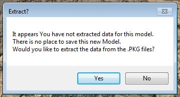

Step one. Get it all working!
Before you dive into creating the worlds greatest tank remodel, lets make sure everything is working.
The first thing we need to do is...
Load a tank from the right menu. Find a tank and right click it and than "Load This..."
Once the tank loads, play around with the different view settings.. Textures on/off.. Show Edges..
Hide parts of the tank.. Changing the back ground.
Check out the Texture viewing and UV mapping display features. Play with the Camouflage if you wish.
Practice moving around in the render window.
Get used to navigating and placing the view cross hair on areas of the tank you want to zoom up on.
Step 1.
Lets export our first FBX file.
Go to the menu and select Export/Extract and than Export FBX.
Do not get Export and Extract confused. Export creates a FBX file.
Extract 'Extracts" data from the PKG files and places it in the res_mods where the game can load it from.
A window will popup asking where you want to export your FBX.
 |
After you pick where to save and click OK. The FBX Xporter panel will pop up
If you have issues with Textures being backwards, you can flip either U, V or both.
Export Textures does what it says. It will create a sub folder to write the textures there under the tanks name.
Tank Exporter converts from DDS to PNG while saving the textures with the FBX.
Create Binary writes a much smaller but non-human readable file. |
Step 2.
Load up your 3D editing/creation software and import the FBX.
Export the FBX from that 3D app and save it under a NEW NAME. I usually just add _Max to the end. (I use 3DS Max)
Step 3.
Import the new FBX in to Tank Exporter.. ( File/Settings --> Import FBX)
Tank Exporter will read the FBX and also load the tank from the PKG files.
The reason TE also loads the tank from the PGKs is so data can be compared to the FBX and find changes.
Also.. the Track part of the Chassis and Visual files are needed to write the prmitive file(s).
|  |
If this window pops up while inporting a FBX, it simply means that no data exists in the res_mods for the tank you imported.
In order for Tank Exporter to save primitive files, it needs the folder structure. Also, the game needs a place to load from too.
If you have NOT set the path to res_mods, you will get a message telling you.
Click Yes... The Extract widow will popup and you can decide what to extract from there.
See the Folders and Paths section.
DO NOT FORGET TO UPDATE THE res_mods PATH IN TE WHEN THE GAME IS UPDATED! |
Step 4.
Once the tank is loaded, flip the view between View Model and View FBX.
What you are looking for is a difference in the size of the imported FBX and the tank read from the PKG files.
THEY MUST BE THE SAME SIZE!
If there is a difference in the size of the two models, you have a scaling issue with your 3D app.
In 3DS Max you can set this under the top menu item "Customize --> Units Setup.."
A window will open.. On the top of that window, select "System Unit Setup".
Set the System Unit Scale to 1 Unit = 1.0 Centimeters and click OK. Max will save this until you change it again.
Clean the scene and re-import the ORIGINAL FBX exported from Tank Exporter. Export the tank with the new scale setting and go back to Step 4.
I can not stress enough how important it is to make sure the scaling is not being changed by your 3D application!
If you can export a tank.. import it in your 3D app... export it from there as FBX and import it in to Tank Exporter as FBX with not scale problems,,,
CONGRATULATIONS!
You have completed the first step in setting up to work with FBX in Tank Exporter and your 3D software!
Now lets do some simple editing of a tank!